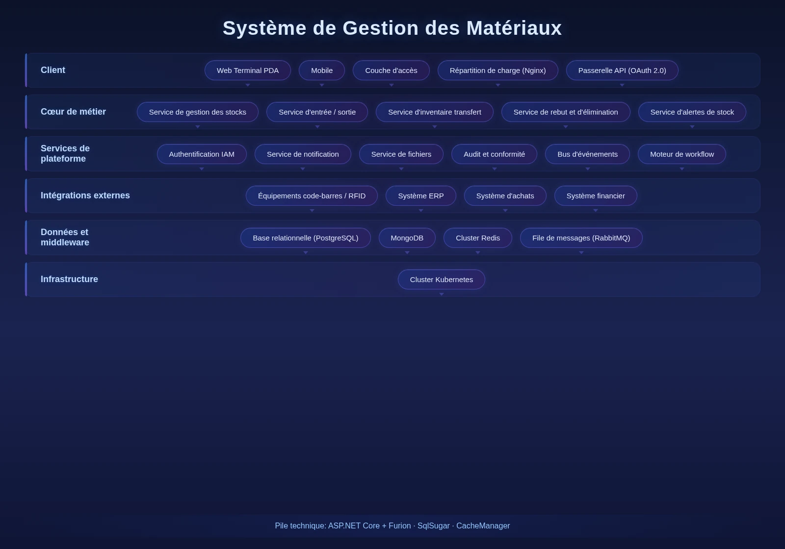

Le Système de Gestion des Matériaux est une plateforme numérique de gestion des matériaux de bout en bout pour les projets d'ingénierie. Face aux défis d'inventaire inexact, de surstock ou de rupture causés par des catégories complexes et une rotation fréquente, le système couvre réquisition, réception, sortie, contrôle des EPI et outils, et mise au rebut. Il assure la coordination multi-entrepôts et la traçabilité, aidant à contrôler l'inventaire avec précision, à réduire les coûts et à garantir un approvisionnement en temps voulu.

Caractéristiques Clés
Le système couvre réquisition, réception, entrée, sortie, inventaire, rebut, EPI/outils et terrassement — modules cœur du processus complet.
Réquisition
Visualisation en temps réel de l'inventaire et des alertes, avec initiation de réquisition par matériau ou par équipe.
Validation
Validation à plusieurs niveaux et signature électronique pour les réquisitions, entrées et sorties.
Réception
Contrôle qualité et quantité des achats, transferts et approvisionnements groupés, support de la réception par lots.
Entrée
Enregistrement d'entrée, affectation d'emplacement et historique pour les matériaux acceptés.
Sortie
Préparation, affectation d'emplacement et enregistrement des sorties selon les réquisitions.
Inventaire
Inventaire périodique ou ponctuel avec scan codes-barres, opérations en lot et ajustement surplus/déficit.
Rebut
Enregistrement, inventaire et gestion des flux pour les matériaux mis au rebut.
Consommation Équipe
Statistiques par équipe des réquisitions et consommations de matériaux.
EPI & Outils
Définition des cycles de remplacement et règles d'échange pour les EPI et outils.
Terrassement
Gestion des fronts de terrassement et des dossiers véhicules, suivi des trajectoires de transport.
Architecture du Système
Architecture du Système

Architecture entrepôt complet + moteurs d'exploitation : cinq types de terminaux terrain (PDA, lecteurs RFID, terminaux embarqués, balances électroniques, imprimantes). La couche moteur d'exploitation indépendante couvre quatre moteurs (entrée, sortie, interne, picking par vague). Le service code-barres/RFID capture les données en temps réel ; le service inventaire utilise Redis Cluster pour la déduction à haute concurrence ; le service de transfert s'appuie sur DotNetCore.CAP pour la cohérence des transactions distribuées.
Scénarios d'Application
Adapté au contrôle d'inventaire multi-entrepôts, à la réception et au suivi des entrées, aux réquisitions et analyses par équipe, à l'inventaire et à la gestion des rebuts.

Contrôle Multi-Enteprets
Entrepôts siège, régionaux et projet gérés de manière centralisée avec synchronisation en temps réel, transfert inter-entrepôts et alertes de stock.

Réception & Suivi des Entrées
Contrôle qualité et quantité des achats et transferts, avec réception par lots et traçabilité complète des entrées.

Réquisition & Consommation
Les chefs de chantier initient les réquisitions par équipe, et le système suit automatiquement la consommation par équipe.

Inventaire & Rebuts
Scan codes-barres, opérations en lot et ajustement surplus/déficit ; enregistrement standardisé et gestion des flux pour les rebuts.
Avantages et garantie
Reconnaissance automatique par code-barres/RFID
Prise en charge de la reconnaissance automatique par code-barres et RFID, améliore l'efficacité des opérations sur site et la précision de la collecte de données, réduit les erreurs de saisie manuelle.
Intégration profonde de plusieurs systèmes
Intégration profonde avec les systèmes ERP, de gestion des approvisionnements et de gestion du budget de construction, réalise l'échange des données opérationnelles et l'interaction entre l'inventaire, les approvisionnements et le budget.
Garantie d'opération hors ligne
Adaptée à l'environnement réseau local africain, prend en charge l'opération hors ligne et la synchronisation des données, les activités ne s'interrompent pas en cas de panne de réseau.
Gestion interactive de plusieurs entrepôts
Gestion unifiée des entrepôts à plusieurs niveaux : groupe, région, projet, synchronisation en temps réel des données d'inventaire, transfert des biens efficace et transparent.
Traçabilité sur l'ensemble du cycle de vie
Couvre l'ensemble du processus : soumission des demandes, acceptation et entrée en stock, sortie et distribution, contrôle de la distribution des équipements de protection individuelle et des outils, inventaire et élimination des déchets.
Alerte de stock
Prise en charge de la configuration d'alertes automatiques selon le stock de sécurité, la date de péremption et les biens stagnants, les risques de pénurie et de surstockage sont détectés à l'avance.
Étude des besoins
Compréhension approfondie du processus opérationnel de stockage de l'entreprise et de l'architecture multi-entrepôts, tri des règles d'entrée en stock, de sortie de stock, d'inventaire, de transfert et des besoins d'intégration.
Déploiement du système
Prise en charge du déploiement local et du déploiement cloud, adaptée à l'environnement réseau local africain et aux scénarios d'opération hors ligne.
Formation et mise en ligne
Formation hiérarchisée pour les administrateurs et les utilisateurs finaux, couvrant les opérations de code-barres/RFID, l'entrée et la sortie de stock, l'inventaire et le transfert, ainsi que l'utilisation des rapports.
Maintenance continue
Support technique à distance 7j/7 et 24h/24, inspection régulière du système et itération des fonctionnalités, optimisation continue de la stratégie de synchronisation hors ligne.
Sécurité des données
Stockage et transmission cryptés des données d'inventaire, contrôle hiérarchisé des autorisations, enregistrement complet des journaux d'opération, supportant l'audit de conformité.
Mise à niveau et extension
Prise en charge de l'accès flexible des nouveaux entrepôts, des nouvelles catégories de biens et des nouveaux systèmes à intégrer, extension de la couverture de la gestion des biens selon les besoins des entreprises.